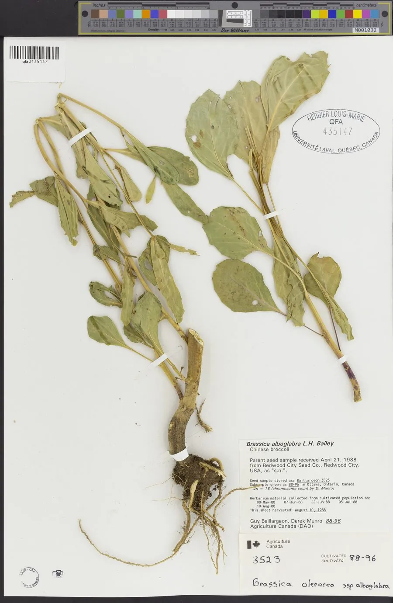

农作物与经济植物 · 植物界
芥蓝 Brassica alboglabra

芥蓝的嫩茎和花薹脆嫩爽口，可清炒和焯水，是华南地区常见的特色蔬菜，耐热性较强，栽培较为广泛。
- 分类
- 门被子植物门纲双子叶植物纲目十字花目科十字花科属芸薹属
- 栖息环境
- 温和气候的菜地，耐热性较强，喜肥沃排水良好土壤
- 地理分布
- 原产中国华南，现中国南方及东南亚广泛栽培
- 保护级别
- 暂无评估（栽培作物）
物种志
芥蓝是十字花科一二年生草本，株高 0.3–0.6 m，茎直立、粗壮，有蜡粉。叶片互生，卵形或椭圆形，表面有蜡粉和少量刺毛，叶柄明显。花薹粗壮，顶端着生总状花序，花白色或黄色，四瓣十字形。芥蓝以嫩茎、嫩叶和花薹供食。
芥蓝原产中国华南地区，是广东、广西等地的传统蔬菜，栽培历史悠久。它喜温和气候，耐热性较强，适宜在疏松肥沃、排水良好的土壤中种植，生育期较短。嫩茎和花薹脆嫩爽口，可清炒、焯水后凉拌、做汤，是粤菜中常见的蔬菜。芥蓝富含维生素 C、膳食纤维和钙，营养丰富。栽培时注意及时采收，花薹过长会变老。
形态与习性
- 株高0.3–0.6 m
- 茎直立粗壮，有蜡粉
- 花薹粗壮，顶端生花序
- 用途清炒、焯水凉拌、做汤
- 特性耐热性较强
趣味知识
- 芥蓝是华南地区的特色蔬菜，广东、广西最常见。
- 芥蓝主要吃嫩茎和花薹，口感脆嫩爽口。
- 芥蓝耐热性较强，是夏秋季节的优质绿叶菜。